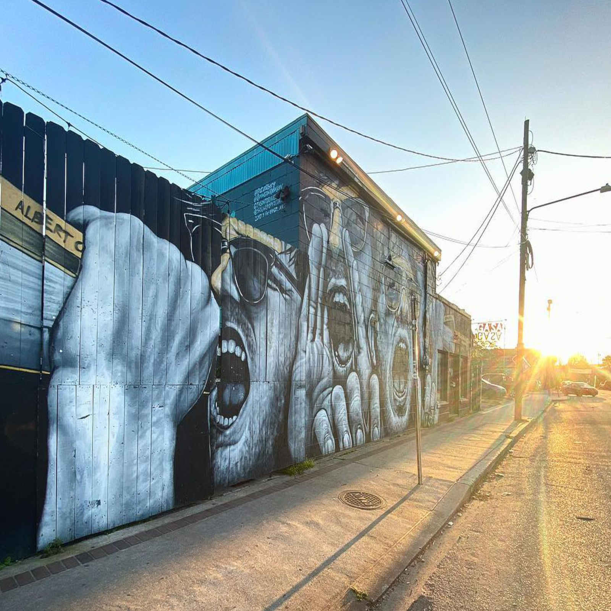

Live NOLA
Stay up to date with Live Music Events in New Orleans!
About Live NOLA
Live NOLA is a blog that was started by Emma Fisk, Founder of Structure Live LLC, that allows people to stay up to date on music events in New Orleans. Emma's passion for live music manifested itself into the events company Structure Live LLC, which brings live music and entertainment events to New Orleans, as well as aiding local musicians in planning and executing their shows. Live NOLA's goal is to connect our community through music. We also strive to give a platform to up and coming artists, allowing them to grow and integrate into the music community.
Our Services Include:
- Booking
- Promotion
- Event Logistics and Execution
- Sound and Lighting Tech
Upcoming Events
Spooktacular Graveyard Concert
Structure Live presents a Spooktacular Graveyard Concert on Friday, October 29th at 2401 Nashville Ave! Starts at 6PM & don’t be late… OR ELSE! We have some hauntingly beautiful performers for y’all, their entrancing singer songwriter acoustic sets that will have you hanging out with us all night Don’t be lame! Wear a costume! We’re getting into the spirit of spooky szn with haunted jello-shotsand jungle juice that’ll curl your toes! We’ll be collecting money for Hurricane Ida Relief! Many communities were hit hard by Ida and we want to do our part to help, all proceeds from this event will go directly towards The Descendants Project and to the Pointe-au-Chien Indian Tribe. PROOF OF VACCINATION REQUIRED!!! Please keep all of us safe and healthy and get vaxxed & stay home if you’re sick! Can’t wait to see all of your costumes!!
Blink To Eject At Gasa Gasa
The hip-hop collective Blink To Eject will be taking the stage at Gasa Gasa on January 15, 2022
Contact Us
livenola@structurelive.com
3606240489